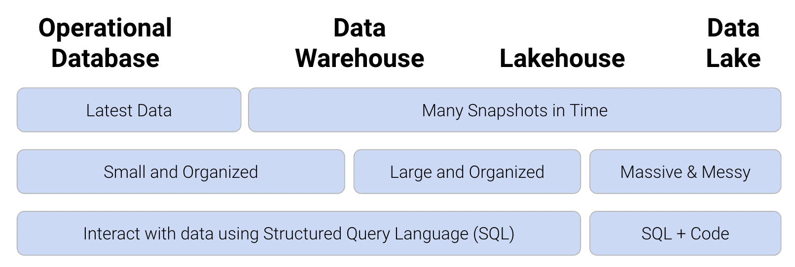
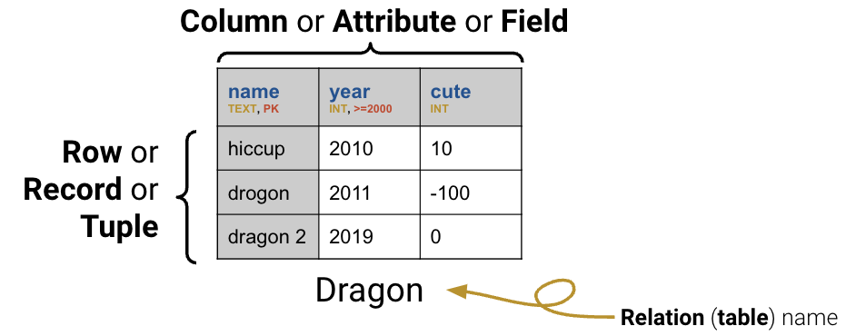

Code
# Load the SQL Alchemy Python library and DuckDB
import sqlalchemy
import duckdbSo far in the course, we have made our way through the entire data science lifecycle: we learned how to load and explore a dataset, formulate questions, and use the tools of prediction and inference to come up with answers. For the remaining weeks of the semester, we are going to make a second pass through the lifecycle, this time with a different set of tools, ideas, and abstractions.
With this goal in mind, let’s go back to the very beginning of the lifecycle. We first started our work in data analysis by looking at the pandas library, which offered us powerful tools to manipulate tabular data stored in (primarily) CSV files. CSVs work well when analyzing relatively small datasets (less than 10GB) that are unchanging (static) and don’t need to be shared across many users. In research and industry, however, data scientists often need to access enormous bodies of data that cannot be easily stored in a CSV format. Collaborating with others when working with CSVs can also be tricky — a real-world data scientist may run into problems when multiple users try to make modifications or more dire security issues arise regarding who should and should not have access to the data.
A database is a large, organized collection of data. Databases are administered by Database Management Systems (DBMS), which are software systems that store, manage, and facilitate access to one or more databases. Databases help mitigate many of the issues that come with using CSVs for data storage: they provide reliable storage that can survive system crashes or disk failures, are optimized to compute on data that does not fit into memory, and contain special data structures to improve performance. Using databases rather than CSVs offers further benefits from the standpoint of data management. A DBMS can apply settings that configure how data is organized, block certain data anomalies (for example, enforcing non-negative weights or ages), and determine who is allowed access to the data. It can also ensure safe concurrent operations where multiple users reading and writing to the database will not lead to fatal errors. Below, you can see the functionality of the different types of data storage and management architectures. In data science, common large-scale DBMS systems used are Google BigQuery, Amazon Redshift, Snowflake, Databricks, Microsoft SQL Server, and more. To learn more about these, consider taking Data 101!

As you may have guessed, we can’t use our usual pandas methods to work with data in a database. Instead, we’ll turn to Structured Query Language.
Structured Query Language, or SQL (commonly pronounced “sequel,” though this is the subject of fierce debate), is a special programming language designed to communicate with databases, and it is the dominant language/technology for working with data. You may have encountered it in classes like CS 61A or Data C88C before, and you likely will encounter it in the future. It is a language of tables: all inputs and outputs are tables. Unlike Python, it is a declarative programming language – this means that rather than writing the exact logic needed to complete a task, a piece of SQL code “declares” what the desired final output should be and leaves the program to determine what logic should be implemented. This logic differs depending on the SQL code itself or on the system it’s running on (ie. MongoDB, SQLite, DuckDB, etc.). Most systems don’t follow the standards, and every system you work with will be a little different.
For the purposes of Data 100, we use SQLite or DuckDB. SQLite is an easy-to-use library that allows users to directly manipulate a database file or an in-memory database with a simplified version of SQL. It’s commonly used to store data for small apps on mobile devices and is optimized for simplicity and speed of simple data tasks. DuckDB is an easy-to-use library that lets you directly manipulate a database file, collection of table formatted files (e.g., CSV), or in-memory pandas DataFrames using a more complete version of SQL. It’s optimized for simplicity and speed of advanced data analysis tasks and is becoming increasingly popular for data analysis tasks on large datasets.
It is important to reiterate that SQL is an entirely different language from Python. However, Python does have special engines that allow us to run SQL code in a Jupyter notebook. While this is typically not how SQL is used outside of an educational setting, we will use this workflow to illustrate how SQL queries are constructed using the tools we’ve already worked with this semester. You will learn more about how to run SQL queries in Jupyter in an upcoming lab and homework.
The syntax below will seem unfamiliar to you; for now, just focus on understanding the output displayed. We will clarify the SQL code in a bit.
To start, we’ll look at a database called example_duck.db and connect to it using DuckDB.
# Load the SQL Alchemy Python library and DuckDB
import sqlalchemy
import duckdb# Load %%sql cell magic
%load_ext sql# Connect to the database
%sql duckdb:///data/example_duck.db --alias duckNow that we’re connected, let’s make some queries! Note that SQL statements are terminated with semicolons, and a SQL query is a SQL statement that returns data.
%%sql
SELECT * FROM Dragon;Thanks to the pandas magic, the resulting return data is displayed in a format almost identical to our pandas tables but without an index.

Looking at the Dragon table above, we can see that it contains contains three columns. The first of these, "name", contains text data. The "year" column contains integer data, with the constraint that year values must be greater than or equal to 2000. The final column, "cute", contains integer data with no restrictions on allowable values.
Now, let’s look at the schema of our database. A schema describes the logical structure of a table. Whenever a new table is created, the creator must declare its schema.
%%sql
SELECT *
FROM sqlite_master
WHERE type='table'The summary above displays information about the database; it contains three tables named Dragon, Dish, and Scene. The rightmost column above lists the command that was used to construct each table.
Let’s look more closely at the command used to create the Dragon table (the second entry above).
CREATE TABLE Dragon (name TEXT PRIMARY KEY,
year INTEGER CHECK (year >= 2000),
cute INTEGER)The statement CREATE TABLE is used to specify the schema of the table – a description of what logic is used to organize the table. Schema follows a set format:
ColName: the name of a column
DataType: the type of data to be stored in a column. Some of the most common SQL data types are:
INT (integers)FLOAT (floating point numbers)VARCHAR (strings of text, also called TEXT)BLOB (arbitrary data, such as audio/video files)DATETIME (a date and time)Constraint: some restriction on the data to be stored in the column. Common constraints are:
CHECK (data must obey a certain condition)PRIMARY KEY (designate a column as the table’s primary key)NOT NULL (data cannot be null)DEFAULT (a default fill value if no specific entry is given)Note that different implementations of SQL (e.g., DuckDB, SQLite, MySQL) will support different types. In Data 100, we’ll primarily use DuckDB.
Database tables (also referred to as relations) are structured much like DataFrames in pandas. Each row, sometimes called a tuple, represents a single record in the dataset. Each column, sometimes called an attribute or field, describes some feature of the record.
The primary key is a set of column(s) that uniquely identify each record in the table. In the Dragon table, the "name" column is its primary key that uniquely identifies each entry in the table. Because "name" is the primary key of the table, no two entries in the table can have the same name – a given value of "name" is unique to each dragon. Primary keys are used to ensure data integrity and to optimize data access.
A foreign key is a column or set of columns that references a primary key in another table. A foreign key constraint ensures that a primary key exists in the referenced table. For example, let’s say we have 2 tables, student and assignment, with the following schemas:
CREATE TABLE student (
student_id INTEGER PRIMARY KEY,
name VARCHAR,
email VARCHAR
);
CREATE TABLE assignment (
assignment_id INTEGER PRIMARY KEY,
description VARCHAR
);Note that each table has a primary key that uniquely identifies each student and assignment.
Say we want to create the table grade to store the score each student got on each assignment. Naturally, this will depend on the information in student and assignment; we should not be saving the grade for a nonexisistent student nor a nonexisistent assignment. Hence, we can create the columns student_id and assignment_id that reference foreign tables student and assignment, respectively. This way, we ensure that the data in grade is always up-to-date with the other tables.
CREATE TABLE grade (
student_id INTEGER,
assignment_id INTEGER,
score REAL,
FOREIGN KEY (student_id) REFERENCES student(student_id),
FOREIGN KEY (assignment_id) REFERENCES assignment(assignment_id)
);To extract and manipulate data stored in a SQL table, we will need to familiarize ourselves with the syntax to write pieces of SQL code, which we call queries.
SELECTing From TablesThe basic unit of a SQL query is the SELECT statement. SELECT specifies what columns we would like to extract from a given table. We use FROM to tell SQL the table from which we want to SELECT our data.
%%sql
SELECT *
FROM Dragon;In SQL, * means “everything.” The query above grabs all the columns in Dragon and displays them in the outputted table. We can also specify a specific subset of columns to be SELECTed. Notice that the outputted columns appear in the order they were SELECTed.
%%sql
SELECT cute, year
FROM Dragon;Every SQL query must include both a SELECT and FROM statement. Intuitively, this makes sense — we know that we’ll want to extract some piece of information from the table; to do so, we also need to indicate what table we want to consider.
It is important to note that SQL enforces a strict “order of operations” — SQL clauses must always follow the same sequence. For example, the SELECT statement must always precede FROM. This means that any SQL query will follow the same structure.
SELECT <column list>
FROM <table>
[additional clauses]The additional clauses we use depend on the specific task we’re trying to achieve. We may refine our query to filter on a certain condition, aggregate a particular column, or join several tables together. We will spend the rest of this note outlining some useful clauses to build up our understanding of the order of operations.
And just like that, we’ve already written two SQL queries. There are a few things to note in the queries above. Firstly, notice that every “verb” is written in uppercase. It is convention to write SQL operations in capital letters, but your code will run just fine even if you choose to keep things in lowercase. Second, the query above separates each statement with a new line. SQL queries are not impacted by whitespace within the query; this means that SQL code is typically written with a new line after each statement to make things more readable. The semicolon (;) indicates the end of a query. There are some “flavors” of SQL in which a query will not run if no semicolon is present; however, in Data 100, the SQL version we will use works with or without an ending semicolon. Queries in these notes will end with semicolons to build up good habits.
ASThe AS keyword allows us to give a column a new name (called an alias) after it has been SELECTed. The general syntax is:
SELECT column_in_input_table AS new_name_in_output_table%%sql
SELECT cute AS cuteness, year AS birth
FROM Dragon;DISTINCTTo SELECT only the unique values in a column, we use the DISTINCT keyword. This will cause any any duplicate entries in a column to be removed. If we want to find only the unique years in Dragon, without any repeats, we would write:
%%sql
SELECT DISTINCT year
FROM Dragon;WHERE ConditionsThe WHERE keyword is used to select only some rows of a table, filtered on a given Boolean condition.
%%sql
SELECT name, year
FROM Dragon
WHERE cute > 0;We can add complexity to the WHERE condition using the keywords AND, OR, and NOT, much like we would in Python.
%%sql
SELECT name, year
FROM Dragon
WHERE cute > 0 OR year > 2013;To spare ourselves needing to write complicated logical expressions by combining several conditions, we can also filter for entries that are IN a specified list of values. This is similar to the use of in or .isin in Python.
%%sql
SELECT name, year
FROM Dragon
WHERE name IN ('hiccup', 'puff');In Python, there is no distinction between double "" and single quotes ''. SQL, on the other hand, distinguishes double quotes "" as column names and single quotes '' as strings. For example, we can make the call
SELECT "birth weight"
FROM patient
WHERE "first name" = 'Joey'to select the column "birth weight" from the patient table and only select rows where the column "first name" is equal to 'Joey'.
WHERE WITH NULL ValuesYou may have noticed earlier that our table actually has a missing value. In SQL, missing data is given the special value NULL. NULL behaves in a fundamentally different way to other data types. We can’t use the typical operators (=, >, and <) on NULL values (in fact, NULL == NULL returns False!). Instead, we check to see if a value IS or IS NOT NULL.
%%sql
SELECT name, cute
FROM Dragon
WHERE cute IS NOT NULL;ORDER BYWhat if we want the output table to appear in a certain order? The ORDER BY keyword behaves similarly to .sort_values() in pandas.
%%sql
SELECT *
FROM Dragon
ORDER BY cute;By default, ORDER BY will display results in ascending order (ASC) with the lowest values at the top of the table. To sort in descending order, we use the DESC keyword after specifying the column to be used for ordering.
%%sql
SELECT *
FROM Dragon
ORDER BY cute DESC;We can also tell SQL to ORDER BY two columns at once. This will sort the table by the first listed column, then use the values in the second listed column to break any ties.
%%sql
SELECT *
FROM Dragon
ORDER BY year, cute DESC;Note that in this example, year is sorted in ascending order and cute in descending order. If you want year to be ordered in descending order as well, you need to specify year DESC, cute DESC;.
LIMIT vs. OFFSETIn many instances, we are only concerned with a certain number of rows in the output table (for example, wanting to find the first two dragons in the table). The LIMIT keyword restricts the output to a specified number of rows. It serves a function similar to that of .head() in pandas.
%%sql
SELECT *
FROM Dragon
LIMIT 2;The OFFSET keyword indicates the index at which LIMIT should start. In other words, we can use OFFSET to shift where the LIMITing begins by a specified number of rows. For example, we might care about the dragons that are at positions 2 and 3 in the table.
%%sql
SELECT *
FROM Dragon
LIMIT 2
OFFSET 1;With these keywords in hand, let’s update our SQL order of operations. Remember: every SQL query must list clauses in this order.
SELECT <column expression list>
FROM <table>
[WHERE <predicate>]
[ORDER BY <column list>]
[LIMIT <number of rows>]
[OFFSET <number of rows>];We can use RANDOM or SAMPLE to get a sample of the dataset. The RANDOM keyword randomizes the entire table (reordering rows randomly). In the example below, we randomize and returns the first two rows as requested.
%%sql
SELECT *
FROM Dragon
ORDER BY RANDOM()
LIMIT 2;The SAMPLE keyword instead uses a seed to randomly draw samples from the table, and it’s more efficient than ordering the entire table using RANDOM. In the example below, we randomly draw two samples from the table, and the REPEATABLE keyword is used here as a seed so that the same rows are drawn each time we run this.
%%sql
SELECT *
FROM Dragon USING SAMPLE reservoir(2 ROWS) REPEATABLE (100);Let’s summarize what we’ve learned so far. We know that SELECT and FROM are the fundamental building blocks of any SQL query. We can augment these two keywords with additional clauses to refine the data in our output table.
Any clauses that we include must follow a strict ordering within the query:
SELECT <column list>
FROM <table>
[WHERE <predicate>]
[ORDER BY <column list>]
[LIMIT <number of rows>]
[OFFSET <number of rows>]Here, any clause contained in square brackets [ ] is optional —— we only need to use the keyword if it is relevant to the table operation we want to perform. Also note that by convention, we use all caps for keywords in SQL statements and use newlines to make code more readable.